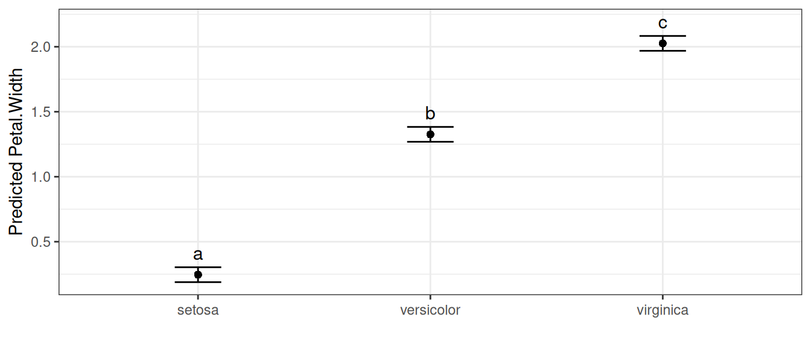
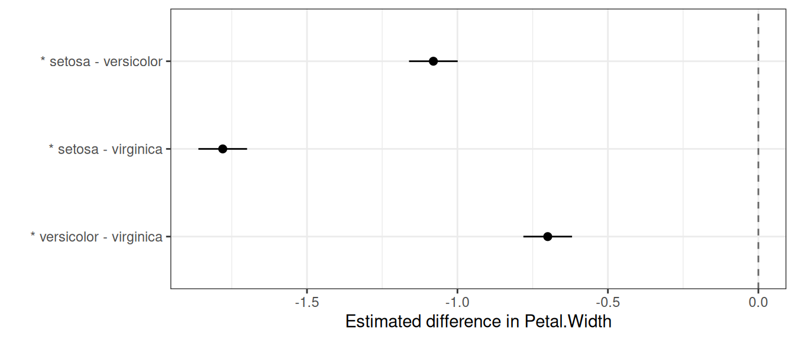
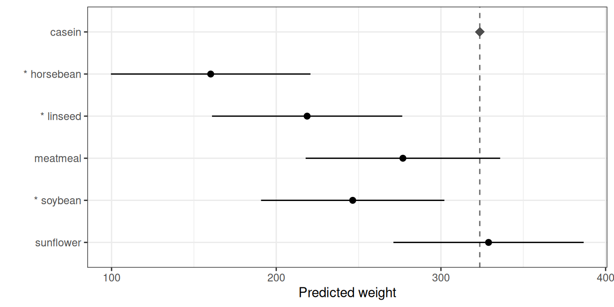
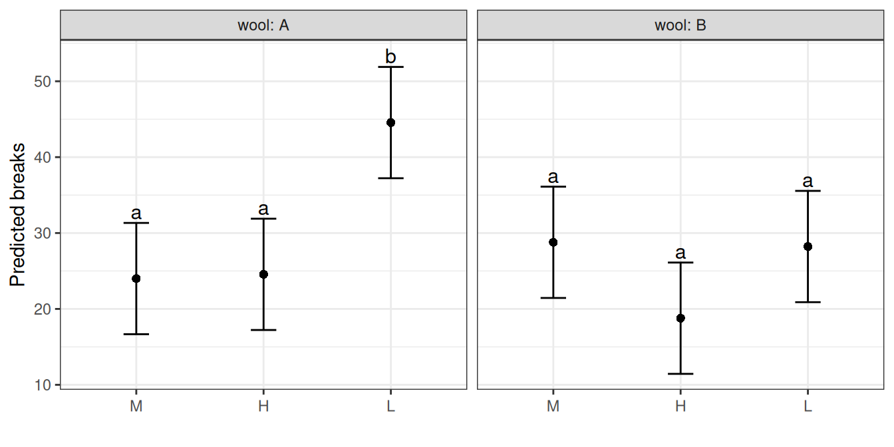

Introduction
After fitting a model, a common next step is to compare predicted treatment means. biometryassist provides three complementary functions for this, and which one you want depends on what you are comparing:
-
multiple_comparisons()is means-centric. It returns one row per treatment level (mean, standard error, confidence interval) and summarises the complete set of all pairwise comparisons with a compact letter display (treatments that share a letter show no evidence of a difference). -
pairwise_comparisons()is difference-centric. It returns a tidy table with one row per requested comparison, and is the honest representation when you care about only some of the comparisons, or about general contrasts. -
reference_comparisons()is means-centric, for the specific question “how does each treatment compare to a single control?”. It reports each level’s mean, the reference mean and the adjusted difference, using an exact Dunnett test by default.
“Means-centric” and “difference-centric” describe how each function presents its results, not what it tests. All three rest on the same underlying pairwise differences between predicted means (more generally, linear contrasts): multiple_comparisons() tests every pairwise difference and condenses them into letters on the means (it does not test the means themselves), whereas pairwise_comparisons() and reference_comparisons() report a chosen subset of those differences directly.
The rest of this vignette tours the three functions on shared example data, then covers the cross-cutting topics: choosing a multiplicity adjustment, the shared adjust and by arguments, confidence intervals, and a summary guide to picking the right function. All examples use built-in data and aov() so they run without any specialised modelling packages, but all three functions work across the supported model types (aov, lm, aovlist, asreml, lmerMod and lme).
The three functions in action
We start with the iris data and a one-way model for petal width, and reuse it across the first three subsections so the same analysis can be seen from each function’s perspective.
model <- aov(Petal.Width ~ Species, data = iris)
multiple_comparisons(): all pairs, means and letters
multiple_comparisons() compares every pair of means and summarises the result as a letter display on the means, using Tukey’s HSD by default:
multiple_comparisons(model, classify = "Species")
## Multiple Comparisons of Means: Tukey's HSD Test
## Significance level: 0.05
## HSD value: 0.0969097
##
## Predicted values:
## Species predicted.value std.error df groups ci low up
## 1 setosa 0.25 0.03 147 a 0.06 0.19 0.30
## 2 versicolor 1.33 0.03 147 b 0.06 1.27 1.38
## 3 virginica 2.03 0.03 147 c 0.06 1.97 2.08Each row is a treatment mean; treatments that share a letter show no evidence of a difference. autoplot() draws the means with their intervals and letters:
autoplot(multiple_comparisons(model, classify = "Species"), label_height = 0.95)
The letter display is a compact summary of all pairwise comparisons at once. Because every pair has been compared, “share a letter” means “no evidence of a difference” — but that interpretation is only valid for the complete set (see The same model, several views).
pairwise_comparisons(): a chosen set of differences
pairwise_comparisons() reports the comparisons themselves, one per row. By default it tests all pairwise differences and adjusts the p-values with Holm’s method:
pairwise_comparisons(model, classify = "Species")
## Pairwise comparisons of means
## Classify: Species
## Adjustment method: holm
## Significance level: 0.05
##
## level1 level2 comparison estimate level1.mean level2.mean
## 1 setosa versicolor setosa - versicolor -1.08 0.25 1.33
## 2 setosa virginica setosa - virginica -1.78 0.25 2.03
## 3 versicolor virginica versicolor - virginica -0.70 1.33 2.03
## std.error statistic df p.value conf.low conf.high
## 1 0.04 -26.39 147 2.51e-57 -1.16 -1.00
## 2 0.04 -43.49 147 2.39e-85 -1.86 -1.70
## 3 0.04 -17.10 147 8.82e-37 -0.78 -0.62Each row is a difference: estimate is mean(level1) - mean(level2), with level1/level2 making the direction explicit and the level1.mean / level2.mean columns reporting the two predicted means it is computed from. If you care about only a specific set of comparisons, pass them via pairs — the multiplicity adjustment is then applied over just that set:
pairwise_comparisons(
model,
classify = "Species",
pairs = c("setosa-versicolor", "versicolor-virginica")
)
## Pairwise comparisons of means
## Classify: Species
## Adjustment method: holm
## Significance level: 0.05
##
## level1 level2 comparison estimate level1.mean level2.mean
## 1 setosa versicolor setosa - versicolor -1.08 0.25 1.33
## 2 versicolor virginica versicolor - virginica -0.70 1.33 2.03
## std.error statistic df p.value conf.low conf.high
## 1 0.04 -26.39 147 2.51e-57 -1.16 -1.00
## 2 0.04 -17.10 147 8.82e-37 -0.78 -0.62autoplot() draws a forest plot of the differences, with a dashed line at zero and an asterisk marking comparisons that are significant at the (adjusted) level:
autoplot(pairwise_comparisons(model, classify = "Species"))
General contrasts
Sometimes the comparison of interest isn’t a single pair. The contrasts argument tests any linear contrast — for example, setosa versus the average of the other two species:
pairwise_comparisons(
model,
classify = "Species",
contrasts = list(
"setosa vs rest" = c(setosa = 1, versicolor = -0.5, virginica = -0.5)
)
)
## Contrasts of means
## Classify: Species
## Adjustment method: holm
## Significance level: 0.05
##
## comparison estimate std.error statistic df p.value conf.low conf.high
## 1 setosa vs rest -1.43 0.04 -40.34 147 2.12e-81 -1.5 -1.36Each contrast is a named vector of coefficients (which should sum to zero) and the list name becomes the row label. A two-level contrast such as c(A = 1, B = -1) is exactly the pairwise difference "A-B".
reference_comparisons(): each level against a control
When the question is specifically “how does each treatment compare to a single control?”, reference_comparisons() is the natural tool. It is means-centric like multiple_comparisons(), but only the comparisons against the chosen reference are made — and because every comparison shares that reference, significance attaches cleanly to each treatment (which a letter display cannot do for an incomplete set; see The same model, several views).
Switching to the chickwts data (chick weights by feed type), we compare every feed to the casein control:
model_cw <- aov(weight ~ feed, data = chickwts)
reference_comparisons(model_cw, classify = "feed", reference = "casein")
## Comparisons against a reference level
## Classify: feed
## Reference: casein
## Adjustment method: dunnett
## Significance level: 0.05
##
## level1 level2 comparison estimate level1.mean level2.mean
## 1 horsebean casein horsebean - casein -163.38 160.20 323.58
## 2 linseed casein linseed - casein -104.83 218.75 323.58
## 3 meatmeal casein meatmeal - casein -46.67 276.91 323.58
## 4 soybean casein soybean - casein -77.15 246.43 323.58
## 5 sunflower casein sunflower - casein 5.33 328.92 323.58
## std.error statistic df p.value conf.low conf.high
## 1 23.49 -6.96 65 5.65e-09 -223.89 -102.88
## 2 22.39 -4.68 65 7.84e-05 -162.53 -47.14
## 3 22.90 -2.04 65 1.67e-01 -105.66 12.31
## 4 21.58 -3.58 65 3.11e-03 -132.75 -21.56
## 5 22.39 0.24 65 9.99e-01 -52.36 63.03Each row gives the mean of a feed (level1.mean), the mean of the control (level2.mean) and their difference, with the adjustment defaulting to the exact Dunnett test. The autoplot() method draws each feed’s mean, a dashed line at the control mean (marked with a diamond), and an interval for the difference from the control, so the interval clears the control line exactly when the comparison is significant; significant feeds are also flagged with an asterisk:
autoplot(reference_comparisons(model_cw, classify = "feed", reference = "casein"))
The same model, several views
The three functions are different views of the same fitted model, not different tests. On the iris model, multiple_comparisons() and an all-pairs pairwise_comparisons() rest on identical pairwise differences — one presents them as means-with-letters, the other as a table of differences. Both are correct; they answer different questions:
- the letter display (
multiple_comparisons()) is a compact summary of the complete set of pairwise comparisons, valid only because every pair is compared; - the difference table (
pairwise_comparisons()) is the honest representation when the set is incomplete or irregular — forcing letters onto such a set would silently assert “not different” for pairs that were never tested; - the reference table (
reference_comparisons()) is the right view when one level is a control, where significance attaches to each treatment directly.
So the choice of function follows from the question, not from the model.
Controlling error across comparisons
Testing several comparisons inflates the chance of at least one false positive, so p-values are adjusted. There are two broad families of error rate, and the right choice depends on your goal.
Family-wise error rate (FWER) is the probability of making any false rejection across the whole family. It is the conservative, “every claim must be trustworthy” criterion, appropriate for a small set of planned comparisons.
- Bonferroni is the simplest FWER method, but quite conservative: Holm controls the same error rate and is uniformly more powerful, so there is essentially never a reason to prefer plain Bonferroni over Holm.
-
Holm (Holm 1979) is a step-down procedure that controls the FWER under any dependence structure. It is the default in
pairwise_comparisons(). -
Tukey’s HSD (Tukey 1953; Hsu 1996) uses the studentized range distribution to give exact simultaneous FWER control for the complete set of all pairwise comparisons (exact for equal replication; the Tukey–Kramer extension covers unequal replication). Because it exploits the exact joint distribution of all pairwise differences, it is more powerful than Bonferroni or Holm for that complete set — which is why it is the default in
multiple_comparisons(). -
Dunnett’s test (Dunnett 1955) is the exact FWER procedure for the specific family of comparing every treatment against a single control. Like Tukey for all pairs, it exploits the known joint distribution of those comparisons (the correlation induced by the shared control), so it is more powerful than a generic adjustment for that family. It is the default in
reference_comparisons().
False discovery rate (FDR) is the expected proportion of false rejections among the rejected comparisons. It is less stringent than FWER and earns its keep when comparisons are many and somewhat exploratory, such as in plant breeding.
-
Benjamini–Hochberg (
"BH"/"fdr") (Benjamini and Hochberg 1995) controls the FDR under independence and positive dependence (which pairwise comparisons satisfy);"BY"is valid under arbitrary dependence but more conservative.
Why Tukey is reserved for the complete (all-pairs) set
A natural question is why pairwise_comparisons() and reference_comparisons() do not offer adjust = "tukey". Tukey’s critical value is calibrated to the largest difference among all the means; applied to a chosen subset it still controls the FWER, but it is sized for comparisons you are not making, so it is overly conservative and conceptually mismatched (Hsu 1996; Bretz et al. 2010). For a selected set, a method calibrated to that set (Holm, Bonferroni, BH) is preferred; for the all-vs-control set, Dunnett is the calibrated choice. Conversely, for the complete set Tukey is the most powerful of these because it uses the known structure of the pairwise differences. So Tukey belongs with the complete-set, means-and-letters analysis (multiple_comparisons()), and the other two functions reject it with an informative error pointing you there.
Because all three functions share the same predicted means and standard errors of differences, testing all pairs in pairwise_comparisons() with a given adjust reproduces the adjusted p-values of multiple_comparisons() with the same adjust — only the presentation differs (a table of differences versus means and letters). The one exception is Tukey, for the reasons above.
The shared adjust and by arguments
All three functions take adjust and by, with the same meaning throughout.
adjust: choosing the multiplicity method
adjust selects the p-value adjustment from the previous section. Each function has a sensible default (Tukey for multiple_comparisons(), Holm for pairwise_comparisons(), Dunnett for reference_comparisons()), but any stats::p.adjust() method can be requested instead — for example Bonferroni:
mc <- multiple_comparisons(model, classify = "Species", adjust = "bonferroni")
mc$comparison_method
## [1] "bonferroni"The only restriction is that the calibrated methods are tied to their family: "tukey" is accepted only by multiple_comparisons() and "dunnett" only by reference_comparisons() (see the previous section).
by: comparisons within subgroups
by runs the comparisons independently within subgroups — useful for a factorial where you want to compare one factor within each level of another, rather than across the whole experiment. Each subgroup is a separate family, with no pooling or adjustment across groups. Using the warpbreaks data (number of breaks by wool type and tension):
wb <- aov(breaks ~ wool * tension, data = warpbreaks)Comparing tension levels within each wool type, the comparison labels refer to the remaining (non-by) factor:
pairwise_comparisons(wb, classify = "wool:tension", by = "wool")
## Pairwise comparisons of means
## Classify: wool:tension
## Adjustment method: holm
## Significance level: 0.05
##
## wool level1 level2 comparison estimate level1.mean level2.mean std.error
## 1 A L M L - M 20.56 44.56 24.00 5.16
## 2 A L H L - H 20.00 44.56 24.56 5.16
## 3 A M H M - H -0.56 24.00 24.56 5.16
## 4 B L M L - M -0.56 28.22 28.78 5.16
## 5 B L H L - H 9.44 28.22 18.78 5.16
## 6 B M H M - H 10.00 28.78 18.78 5.16
## statistic df p.value conf.low conf.high
## 1 3.99 48 0.000684 10.19 30.93
## 2 3.88 48 0.000684 9.63 30.37
## 3 -0.11 48 0.915000 -10.93 9.81
## 4 -0.11 48 0.915000 -10.93 9.81
## 5 1.83 48 0.175000 -0.93 19.81
## 6 1.94 48 0.175000 -0.37 20.37by behaves the same way in the other two functions. In multiple_comparisons() the letter display restarts within each subgroup and autoplot() facets the means and letters by the by variable:
autoplot(multiple_comparisons(wb, classify = "wool:tension", by = "wool"))
A note on confidence intervals
The intervals shown by pairwise_comparisons() and reference_comparisons() (and their plots) are per-comparison intervals — except for Dunnett, they are not adjusted for simultaneity. Significance, on the other hand, is judged by the multiplicity-adjusted p-value. These two can disagree: an interval may exclude zero while the adjusted p-value is no longer below sig, and both functions emit a one-time note when this happens in a result. (Dunnett is the exception: its intervals are the simultaneous intervals, so for reference_comparisons() with its default they agree with the test by construction.) This is the same tension that the int.type options address in multiple_comparisons(). So in a forest plot, read significance from the asterisk (which tracks the adjusted test), not from whether the drawn interval happens to cross zero.
Choosing the right function: a summary
Match the function to the question you are asking:
-
All pairwise comparisons, with a compact summary? Use
multiple_comparisons()(Tukey’s HSD by default, with letter groupings). -
A specific or planned subset of comparisons, or a general contrast? Use
pairwise_comparisons()(Holm by default), which represents the chosen set honestly as a table of differences. -
Each treatment against a single control? Use
reference_comparisons()(exact Dunnett by default), which keeps the analysis means-centric. -
Many, exploratory comparisons where a controlled proportion of false positives is acceptable? Use an FDR method (
adjust = "BH"). -
Comparisons within subgroups of a factorial? Use
byin any of the three.
The same advice as a table:
| Question / comparison type | Function | Default adjustment | Not valid |
|---|---|---|---|
| All pairwise comparisons, summarised with letters | multiple_comparisons() |
Tukey’s HSD | dunnett |
| A chosen subset of pairs, or general contrasts | pairwise_comparisons() |
Holm |
tukey, dunnett
|
| Every treatment vs a single control | reference_comparisons() |
Dunnett | tukey |
Any other stats::p.adjust() method (Holm, Bonferroni, BH, BY, …) can be requested in all three via adjust; only the calibrated methods are restricted to their family, as shown in the final column.
References
```